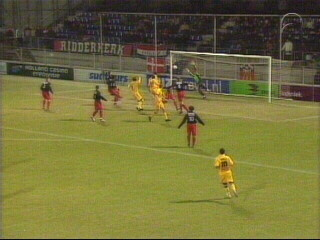
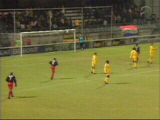
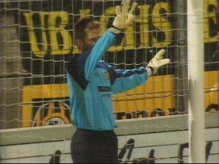
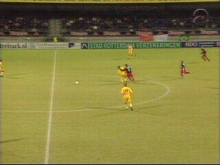
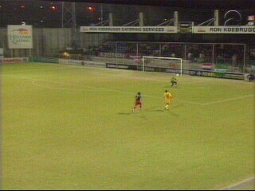
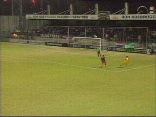
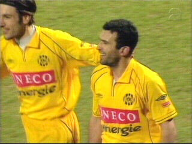
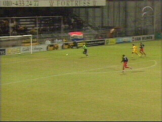
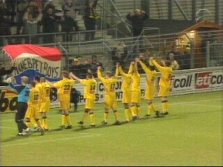

|
Excelsior - Roda JC (0-2) 19 februari 2003 |

Al in de 4e minuut scoort Soetaers 0-1 uit een
vrije trap waarop doelman Malkowski zich
flink verkeek.

Circa 100 Rodafans trotseerden de bijtende kou.

Roorda zet de muur goed voor een vrije trap die
door Bastos genomen wordt.

Lopez hangt irritant aan Addo die de aanvaller
van Excelsior vervolgens van zich af slaat.

Malkowski staat te ver voor zijn goal.

Anastasiou ziet dat en lobt de bal over de
ongelukkige doelman: 0-2 (33).

Beter dan vorige week tegen Willem II.

Bijna wordt het 0-3 na een misverstand in de
Rotterdamse defensie.

De selectie bedankt de Hanebretboys :-)
Door dit resultaat en door het verlies van NAC
herovert Roda de 4e plaats in de competitie!